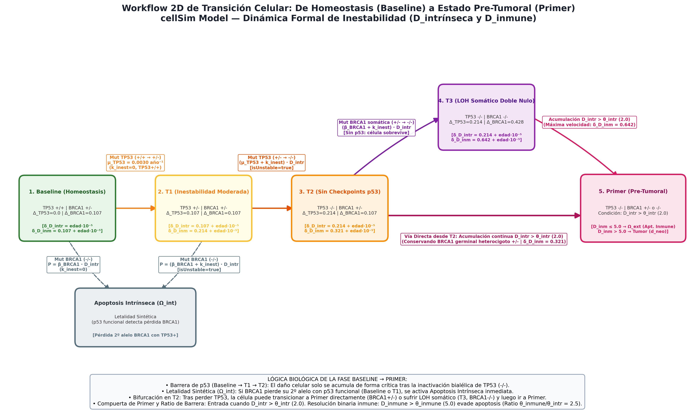
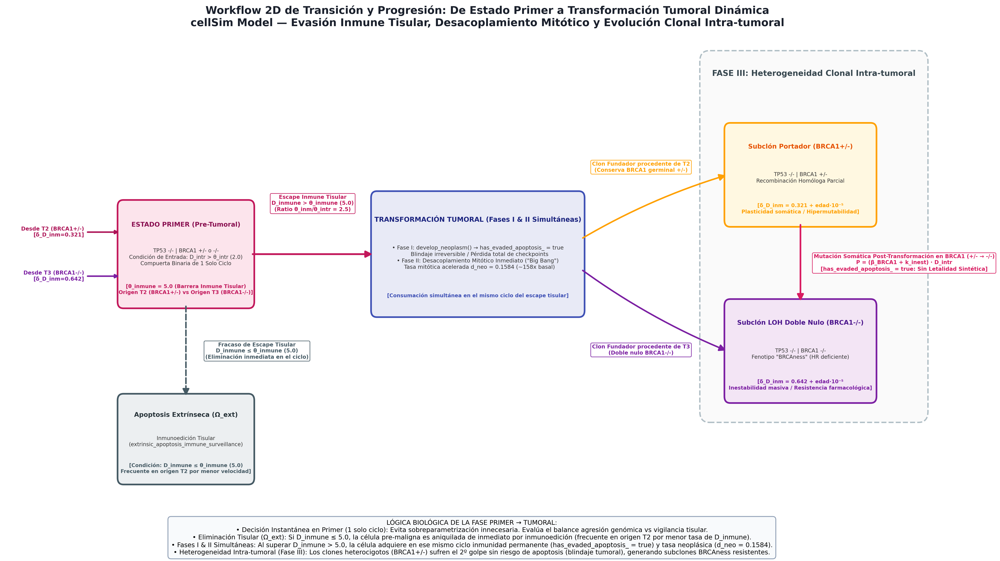

cellSim Computational Platform — Guía interactiva de estados ontológicos, parámetros cinéticos calibrados (Δlow=0.107, Δhigh=0.214), compuerta instantánea de Primer y ecosistema tumoral.
🎯 Alcance de este documento (Escala Celular): Esta guía se centra exclusivamente en la ontología, dinámica y reglas de evolución a nivel de células individuales. En una fase posterior de la documentación se detallará la dinámica a escala tisular macroscópica (cómo un tejido completo transiciona de sano a tumoral).
cellSim es una plataforma computacional basada en agentes que simula la carcinogénesis en epitelios con mutación germinal hereditaria en BRCA1+/-. A escala unicelular, el modelo describe la trayectoria biológica y matemática desde una célula sana y funcional hasta la emergencia, escape y ramificación clonal de un linaje maligno:
TP53 actúa como un interruptor On/Off de apoptosis (su pérdida anula los checkpoints de control del ADN), mientras que BRCA1 modula la estabilidad genómica y la latencia clínica del tejido.TP53 conserve al menos un alelo funcional (estados Baseline y T1), la pérdida del segundo alelo de BRCA1 es inviable: la célula detecta las roturas masivas de doble cadena de ADN y se autodestruye por apoptosis intrínseca (Ωint), impidiendo la carcinogénesis.TP53-/-), la célula tolera la deficiencia homóloga de BRCA1 sin morir, acumulando daño genético a velocidad acelerada.Aunque las reglas cinéticas aquí descritas rigen a cada célula individualmente, el paso a nivel de tejido completo sigue tres premisas fundamentales de detección y finalización:
BRCA1+/-.Naturaleza Ontológica de los Estados Celulares: Los estados celulares son representaciones abstractas de las condiciones fisiológicas y genéticas de una célula en un momento dado. Son fundamentales para entender la respuesta celular a diferentes estímulos y perturbaciones genotóxicas.
Cooperación Funcional BRCA1 - TP53: La interacción entre estos dos genes determina el comportamiento y destino del linaje:
Dos Motores de Acumulación de Daño:
Las siguientes dos figuras cartografían de forma visual y continua el ciclo vital completo de la célula en cellSim. La Figura 1 describe la fase pre-neoplásica (desde la homeostasis en BASE hasta el cuello de botella en PRIMER), detallando cómo el guardián TP53 previene el cáncer mediante letalidad sintética (Ωint). La Figura 2 retoma el testigo en PRIMER y modela la compuerta de escape inmune tisular de un solo ciclo, la activación simultánea del programa tumoral (Fases I & II) y la diversificación somática intra-tumoral en la Fase III.


Significado biológico y computacional de cada parámetro del motor cinético (GenomicInstabilityDeltaStrategy) en cellSim organizado en bloques temáticos horizontales:
isUnstable = true).Este es el estado celular inicial, caracterizado por la estabilidad genómica y la funcionalidad normal. En este estado, la célula mantiene un equilibrio homeostático y es capaz de responder adecuadamente a señales externas e internas. La presencia de un alelo funcional de BRCA1 y TP53 permite la reparación eficiente del ADN y la regulación del ciclo celular. No obstante, estas células acumulan un daño genético reducido pero constante a lo largo del tiempo.
En cuanto a la dinámica mutacional, dado que ambos alelos de TP53 están intactos, el genoma permanece estable (isUnstable = false y k_inestabilidad = 0). En consecuencia, tanto el alelo funcional restante de BRCA1 como los dos alelos de TP53 están sujetos únicamente a sus tasas basales espontáneas mínimas de mutación. La probabilidad de adquirir una nueva mutación en este estado es muy baja y sólo aumenta de forma casi imperceptible con la edad mediante el incremento lento de D_intr.
Evolución del estado:
Esta célula también se puede dividir, y lo hace a una tasa fisiológica estándar (d_basal = 0.0010).
Este estado representa el primer paso hacia la desestabilización genómica de la célula. Se produce cuando una célula en estado Baseline sufre la pérdida de un alelo de TP53 (haploinsuficiencia funcional). Aunque la célula sigue siendo viable y retiene un alelo funcional de cada gen que le permite mantener el control básico del ciclo celular, los mecanismos de detección y reparación de daños comienzan a deteriorarse. En consecuencia, el ritmo de acumulación de daño tanto intrínseco (D_intr) como inmunológico (D_inmune) se acelera respecto al estado inicial.
En el plano mutacional, la pérdida del primer alelo de TP53 activa la condición de inestabilidad genómica (isUnstable = true). Esto provoca que se sume de inmediato la penalización k_inestabilidad a las probabilidades de mutación de todos los genes:
Dado que D_intr se acumula a un ritmo superior en T1, el factor multiplicador del umbral mutacional crece más rápido ciclo a ciclo, generando una aceleración progresiva en la probabilidad de sufrir mutaciones. La célula se divide a la tasa estándar (d_basal = 0.0010).
Este estado representa una fase de desprotección genómica crítica. Se alcanza cuando una célula en T1 sufre la pérdida del segundo alelo de TP53 (segundo golpe o pérdida de heterocigosidad). Al quedar completamente inactivado el "guardián del genoma", la célula pierde tanto los puntos de control del ciclo celular dependientes de TP53 como la capacidad de inducir apoptosis ante aberraciones genéticas severas. Mientras tanto, BRCA1 permanece en heterocigosis (+/-), proporcionando todavía una capacidad residual de reparación por recombinación homóloga.
En el plano mutacional y cinético:
isUnstable = true, con k_inestabilidad activo).Si D_intr cruza el umbral crítico (θintr = 2.0) antes de mutar BRCA1, transiciona a Primer; si pierde antes el segundo alelo de BRCA1, pasa a T3 sin morir.
Este estado representa la máxima inestabilidad genómica y degradación celular del modelo pre-neoplásico. Se alcanza exclusivamente desde T2, cuando una célula que ya ha perdido ambos alelos de TP53 sufre la pérdida del alelo restante de BRCA1. Al carecer totalmente de BRCA1, la célula pierde la capacidad de reparar roturas de doble cadena de ADN por recombinación homóloga; no obstante, al no contar con TP53 funcional para censurar este daño catastrófico, la célula sobrevive y continúa proliferando, acumulando aberraciones cromosómicas masivas.
En el plano mutacional y cinético:
isUnstable = true).Con ambos genes conductores ya completamente inactivados (doble nulo), el destino principal de la célula es el avance inexorable hacia el estado Primer en cuanto D_intr > 2.0.
develop_neoplasm() e inicia mitosis acelerada.
El estado "Primer" representa el cuello de botella evolutivo más crítico del modelo: es la condición transitoria obligatoria que debe alcanzar toda célula antes de convertirse en tumoral. No se alcanza mediante una mutación puntual directa, sino por la combinación de una base genética desprotegida (TP53-/-) y la superación de un umbral cuantitativo de daño genotóxico: el daño intrínseco acumulado debe superar el umbral crítico (D_intr > 2.0). A este estado pueden llegar tanto células procedentes de T2 (BRCA1+/-) como de T3 (BRCA1-/-).
A diferencia de los estados anteriores, Primer es un estado de un solo ciclo: la célula no permanece en él dividiéndose ni acumulando daño a lo largo del tiempo. Se enfrenta a una resolución binaria inmediata gobernada por D_inmune:
develop_neoplasm(), transiciona a Tumoral y adquiere resistencia total a apoptosis.Justificación metodológica (Parsimonia): En la clínica las lesiones pre-malignas pueden presentar ventanas de latencia indeterminadas. Para no sobreparametrizar innecesariamente el modelo computacional con grados de libertad difíciles de contrastar, se formaliza Primer como una compuerta estocástica binaria e instantánea de un solo ciclo (Navaja de Ockham).
has_evaded_apoptosis_ = true.cellSim se activan de manera unificada en el mismo instante de escape tisular.
La transformación neoplásica en cellSim no constituye un estado final estático o monolítico, sino un ecosistema biológico dinámico formado por un conjunto de subestados con su propia evolución tumoral interna. Emerge de dos motores concurrentes: la degradación continua y acelerada y la mutabilidad somática activa en cada ciclo mitótico.
Las Tres Fases Dinámicas del Desarrollo Tumoral:
develop_neoplasm() y consolida has_evaded_apoptosis_ = true, volviéndose inmortal ante daños genotóxicos y señales citotóxicas.Visión panorámica de la evolución fenotípica, cinética y de inestabilidad genómica a través de los 6 estados de cellSim.
| Parámetro Fijo | 🌱 1. BASE | ⚠️ 2. T1 | 🔥 3. T2 | ⚡ 4. T3 | 🚨 5. PRIMER | 👑 6. TUMOR |
|---|---|---|---|---|---|---|
| Genotipo Guía | TP53+/+ BRCA1+/- |
TP53+/- BRCA1+/- |
TP53-/- BRCA1+/- |
TP53-/- BRCA1-/- |
TP53-/- BRCA1+/- ó -/- |
TP53-/- Subclones Coexistentes |
| Δ(TP53) (Daño ADN) | 0.000 | 0.107 (Δlow) | 0.214 (Δhigh) | 0.214 (Δhigh) | 0.214 (Δhigh) | 0.214 (Δhigh) |
| Δ(BRCA1) (Inmune) | 0.107 (Δlow) | 0.107 (Δlow) | 0.107 (Δlow) | 0.428 (2·Δhigh) | 0.107 (T2) | 0.428 (T3) | 0.107 (+/-) | 0.428 (-/-) |
| Inestabilidad kinest | 0.000 (false) | 0.107 (true) | 0.107 (true) | 0.107 (true) | 0.107 (true) | 0.107 (Hipermutado) |
| Checkpoint p53 | ACTIVO Vigilancia 100% |
ACTIVO 1 alelo residual |
ANULADO Permisivo a daño |
ANULADO Permisivo a daño |
ANULADO Compuerta inmune |
BLINDADO Inmortal permanente |
| Tasa Mitótica (d) | dbasal = 0.0010 | dbasal = 0.0010 | dbasal = 0.0010 | dbasal = 0.0010 | d = 0.0000 (1 ciclo transitorio) |
dneo = 0.1584 (~158x proliferación) |
| Destinos de Salida | • A T1 (μTP53) • Ωint (βBRCA1) |
• A T2 (μTP53) • Ωint (βBRCA1) |
• A T3 (βBRCA1) • A PRIMER (Dintr>2) |
• A PRIMER (Dintr>2) | • Ωext (Dinm≤5) • A TUMOR (Dinm>5) |
• Expansión tumoral • Ramificación somática |